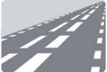

Auto Theorie – Afstand en Snelheid
Maximumsnelheid
De toegestane topsnelheid wordt aangegeven met verkeersborden en verkeerstekens. Wanneer er meerdere snelheidslimieten worden vermeld, geldt de laagste als maatgevend.
Het is niet altijd verantwoord om met de maximale snelheid te rijden. Je moet er steeds toe in staat zijn om je voertuig tot stilstand te brengen binnen de afstand waarbinnen je de weg kunt overzien en waar deze vrij is.
Autosnelweg
Het begin van een autosnelweg wordt aangeduid met bord G1. De eigenschappen van een snelweg zijn:
- Autosnelwegen hebben altijd een A-nummer.
- Maximale snelheid van 130 km/u (tenzij anders vermeld).
- Gescheiden rijstroken.
- Enkel toegestaan voor motorvoertuigen die minimaal 60 km/u kunnen rijden.
Vanaf 12 maart 2020 is de maximumsnelheid op snelwegen verlaagd naar 100 km/u overdag. In de avond en nacht blijft de snelheidslimiet hetzelfde op trajecten waar 120 km/u of 130 km/u is toegestaan.
Verkeersborden geven de maximumsnelheid aan
Omdat de toegestane snelheid op de snelweg overdag lager is dan ’s nachts, beschikken veel snelheidsborden over een onderbord met een tijdsaanduiding. Zo kan er bijvoorbeeld een bord staan met 100 km/u van 06:00 tot 19:00. Soms worden ook dubbele borden geplaatst, bijvoorbeeld één met 120 km/u van 19:00 tot 06:00.
Wanneer er geen specifieke snelheid vermeld wordt, geldt de wettelijke maximumsnelheid van 130 km/u.
Overzicht van snelheden op de snelweg:
- Tussen 06:00 en 19:00 uur: 100 km/u (met uitzondering van 80 km/u-trajecten)
- Tussen 19:00 en 06:00 uur: 100, 120 of 130 km/u (afhankelijk van het traject)
- Bij geopende spitsstroken geldt een aangepaste snelheid van 80 of 100 km/u
Autoweg
Het begin van een autoweg wordt aangeduid met bord G3. De kenmerken zijn:
- Maximaal 100 km/u buiten de bebouwde kom (tenzij anders aangegeven)
- Maximaal 50 km/u binnen de bebouwde kom (tenzij anders vermeld)
- Alleen toegankelijk voor motorvoertuigen die minimaal 50 km/u kunnen rijden
Binnen en buiten de bebouwde kom
Het begin van een bebouwde kom wordt aangegeven met bord H1.
- Binnen de bebouwde kom: maximale snelheid 50 km/u voor motorvoertuigen
- Buiten de bebouwde kom: maximale snelheid 80 km/u voor motorvoertuigen op niet-autowegen of autosnelwegen
Bijzondere maximumsnelheden
Wanneer er geen lagere snelheidslimiet geldt, zijn voor de onderstaande voertuigen de volgende specifieke maximumsnelheden van toepassing:
- 100 km/u voor T100-bussen
- 90 km/u voor voertuigen (zoals personenauto’s, bestelwagens, motorfietsen, driewielige motorvoertuigen en T100-bussen) die een aanhanger trekken met een totaalgewicht van maximaal 3500 kg
- 80 km/u voor vrachtwagens en touringcars
- 45 km/u voor brommobielen
- 40 km/u voor landbouwvoertuigen met kenteken op de volgende wegen:
- buiten de bebouwde kom
- binnen de bebouwde kom zonder fietsverkeer, of binnen de bebouwde kom met een vrijliggend fietspad
- binnen de bebouwde kom waar een snelheidslimiet van 70 km/u geldt
- 25 km/u voor snorfietsen, landbouwvoertuigen en voertuigen met beperkte snelheid
Maximumsnelheid bromfiets en gehandicaptenvoertuig
De toegestane snelheden voor bromfietsen en gehandicaptenvoertuigen met motor zijn als volgt:
- 45 km/u op de rijbaan, zowel binnen als buiten de bebouwde kom
- 40 km/u buiten de bebouwde kom op het fietspad of bromfietspad
- 30 km/u binnen de bebouwde kom op het fietspad of bromfietspad
Een speed-pedelec is een elektrische bromfiets.
Wegbelijning
Aan de hand van wegmarkeringen kun je wegen onderverdelen in verschillende soorten.
Buiten de bebouwde kom kom je drie typen wegen tegen waarbij doorgaans een vaste maximumsnelheid geldt:
- 60/80 km/u-wegen hebben geen asstreep (60 km/u wanneer een bord met “60” aanwezig is)
- 80 km/u-wegen hebben een dubbele asstreep
- 100 km/u-wegen (autowegen) hebben een groene, gevulde dubbele asstreep

100km weg

80km weg

60km weg
De asstrepen (of middenstrepen) beïnvloeden de maximumsnelheid niet.
Verkeersborden hebben altijd voorrang boven wegmarkeringen. De strepen dienen vooral om extra overzicht en oriëntatie te bieden.
Deze markeringen worden ook wel Essentiële Herkenbaarheidskenmerken (EHK) genoemd. Ze helpen bestuurders als geheugensteun.
Een dubbele middenstreep zorgt ervoor dat je meer afstand houdt van het tegemoetkomende verkeer.
Op smalle wegen of dijken ontbreken soms strepen — daar is het belangrijk om langzamer en voorzichtiger te rijden.
Volgafstand
Je moet ongeveer twee seconden afstand bewaren tot de bestuurder voor je.
Je kunt dit eenvoudig controleren door een herkenningspunt naast de weg te kiezen en te tellen hoe lang het duurt voordat jij dat punt passeert.
Bij slechte (weer)omstandigheden is een afstand van twee seconden onvoldoende.
Op de autosnelweg kan twee seconden daarentegen juist ruim voldoende zijn — sommige bestuurders houden zelfs iets meer afstand dan nodig is.
Reactietijd
De reactietijd is de periode die een bestuurder nodig heeft om op een verandering in het verkeer (zoals een stopsignaal) te reageren.
De afstand die in deze tijd wordt afgelegd, heet de reactieafstand.
Over het algemeen hebben oudere bestuurders iets meer tijd nodig om te reageren dan jongere.
- De gemiddelde reactietijd van een bestuurder is ongeveer 1 seconde.
- Een goed uitgeruste en alerte bestuurder reageert doorgaans sneller.
- Vermoeidheid, afleiding, slechte gezondheid, alcohol of drugs kunnen de reactietijd negatief beïnvloeden.
Het berekenen van de volgafstand
De twee-secondenregel kun je ook omrekenen naar meters.
Er bestaat een handig ezelsbruggetje:
Snelheid / 2 + 10%
Bijvoorbeeld:
50 km/u → 50 ÷ 2 = 25, plus 10% van 25 = 2,5 → totaal 27,5 meter volgafstand.
Voorbeelden:
- 30 km/u → 30 ÷ 2 + 10% = 16,5 meter
- 50 km/u → 50 ÷ 2 + 10% = 27,5 meter
- 100 km/u → 100 ÷ 2 + 10% = 55 meter
- 130 km/u → 130 ÷ 2 + 10% = 71,5 meter
Stopafstand
De stopafstand is de totale afstand die een voertuig aflegt vanaf het moment dat de bestuurder een stopsignaal waarneemt, tot het moment dat het voertuig volledig tot stilstand komt.
- Reactieafstand – de afstand die wordt afgelegd vanaf het moment dat de bestuurder het signaal ziet tot het moment dat hij of zij daadwerkelijk begint te remmen.
- Remafstand – de afstand die het voertuig aflegt vanaf het intrappen van het rempedaal tot het voertuig volledig stilstaat.
Reactieafstand berekenen
Bij het berekenen van de reactieafstand gaan we uit van een reactietijd van ongeveer 1 seconde. Je hoeft dus enkel te weten hoeveel afstand het voertuig in één seconde aflegt.
Er is een handig ezelsbruggetje om dit te berekenen:
Deel de snelheid door 10 en vermenigvuldig de uitkomst met 3.
Als je 50 km/u rijdt → 50 ÷ 10 = 5 → 5 × 3 = 15 meter reactieafstand.
Voorbeelden:
- 30 km/u → 30 ÷ 10 × 3 = 9 meter
- 50 km/u → 50 ÷ 10 × 3 = 15 meter
- 100 km/u → 100 ÷ 10 × 3 = 30 meter
- 130 km/u → 130 ÷ 10 × 3 = 39 meter